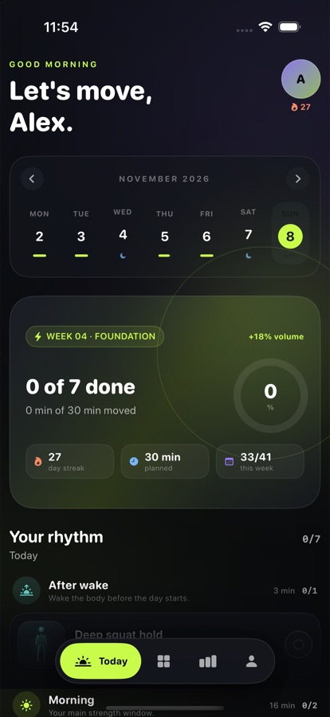
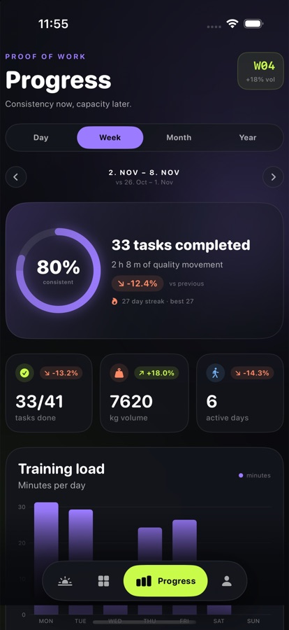
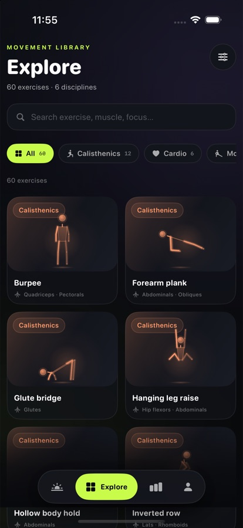
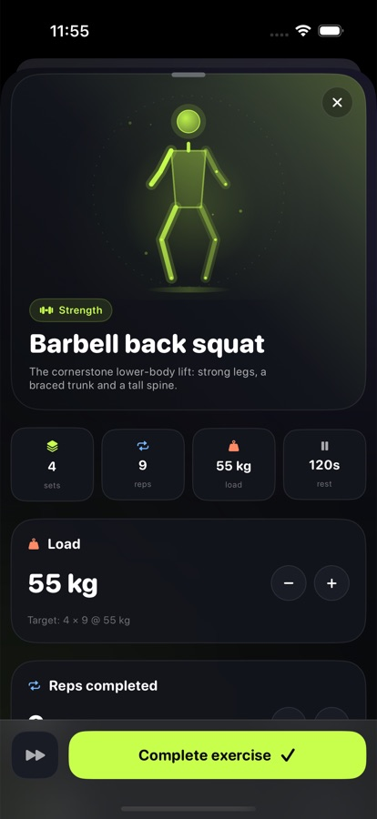

After wake
Deep squat hold
2 × 45s · 3 min
A catalogue of beautifully animated movement, a day plan that flows from wake to sleep, and progress you can actually prove. Your plan gets harder every week — your data stays yours.
SwiftUI · Bun · TypeScript · SQLite · Docusaurus




Training is not one block at 6pm. Fitr distributes intent across the day: mobility when you wake, quality strength in the morning, a midday reset, a second block, an evening flow and a pre-sleep downshift. Recovery days stay intentional.
See how the day is built2 × 45s · 3 min
4 × 9 @ 55 kg + triceps pushdown
2 × 8 · posture reset
3 × 12 · pull volume
2 × 9 · decompress
2 × 45s · downshift
No feed to scroll, no achievements to farm. Six surfaces that make the next right action obvious.
Topic, type, region, primary muscles, auxiliary muscles, difficulty, equipment, cues and breathing. Every filter is backed by real data.
Six windows with different jobs, generated from your goal, experience, equipment, training days and session length.
+6% volume and +4% intensity each week. Finish all sets at effort 7 or below and the next week adds load or reps.
Day, week, month and year. Calendar heatmap, streak, muscle balance, e1RM records and period-over-period improvement.
Every movement is a Canvas-rendered skeleton with eased keyframes, motion trails and topic tinting. No video, no sprites, infinite resolution.
A Bun API and a SQLite database you run yourself. No account, no third-party analytics, no lock-in. Back up one file.
Activity is easy to display. Improvement is harder. Fitr compares each period with the one before it, using the same exercise and the same metric: estimated 1RM for loaded work, total reps for bodyweight, total hold seconds for isometrics.
Volume rises 6% per week and intensity 4%, capped so the curve stays honest. Autoregulation adds a bump only when you complete the work at a sustainable effort. Recovery slots never inflate.
volume = min(1 + 0.06 × (week − 1), 1.8)
load = min(1 + 0.04 × (week − 1), 1.5)
Fitr is not a black box. The iOS app talks to a small Bun API you run. Everything — catalogue, plans, completions — lives in one SQLite file. Read the code, change the rules, keep the data.
One command. Bun installs, seeds 60 exercises and starts the API.
One database. Plans and history in SQLite with WAL and foreign keys.
One repo. App, server, docs and this site are versioned together.
$ git clone <repo> fitr
$ cd fitr
$ bun install
$ bun run dev:server
Fitr API ▸ http://localhost:8787
database ▸ ./apps/server/data/fitr.sqlite
catalogue ▸ 60 exercises · seeded history
$ cd apps/ios && xcodegen generate
$ open Fitr.xcodeproj ▍Not yet. It is a self-hosted iOS app you build from source with Xcode. TestFlight and App Store distribution are on the roadmap, after authentication and production hardening.
For the full experience, yes: a small Bun process on your Mac, a VPS or a home server. The exercise catalogue and animations work offline from the bundled snapshot, and the last plan is cached, but logging requires the API.
Training weeks raise volume by 6% and intensity by 4%, capped at +80% and +50%. If you finish all sets at effort 7 or below, the next week adds 2.5 kg or 2 reps. Recovery slots are excluded. There is no silent deload; an opt-in deload is planned.
Each movement is a hand-keyframed 14-joint skeleton drawn live with SwiftUI Canvas. That is why there are no video assets, why the illustrations stay sharp at any size, and why they can take on the color of their topic.
It stays in your SQLite database on your machine. There is no analytics SDK, no account, and no third-party service. The current API is single-user and trusts its local network, so put it behind TLS and authentication before exposing it publicly.
Yes. Exercises, muscles and coaching content live in one seed file. The progression constants live in one TypeScript module. Change them, reset the database, export the catalogue and rebuild the app.
Start with the docs, run the server, and make the next week a little harder than the last.